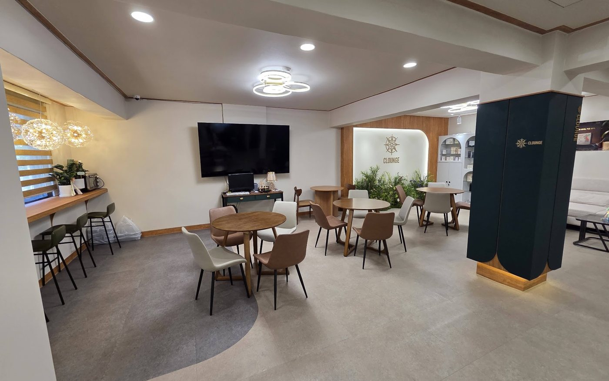
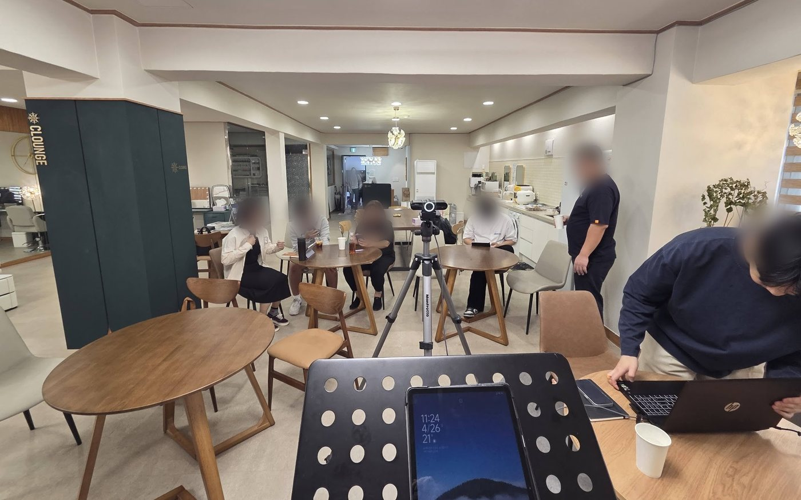
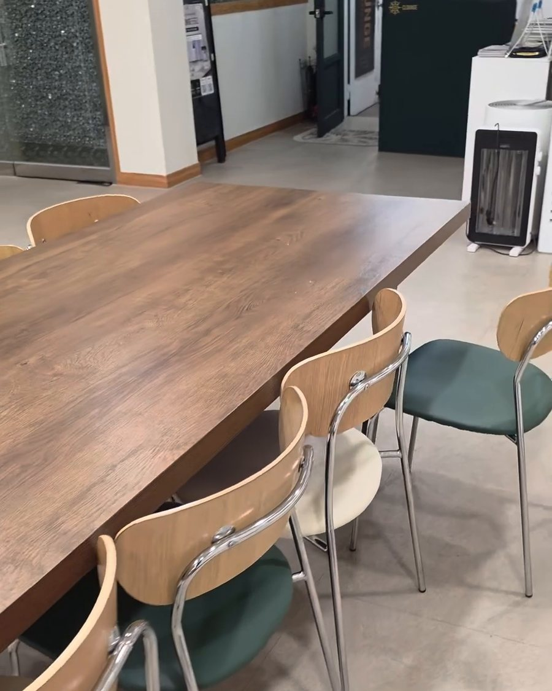
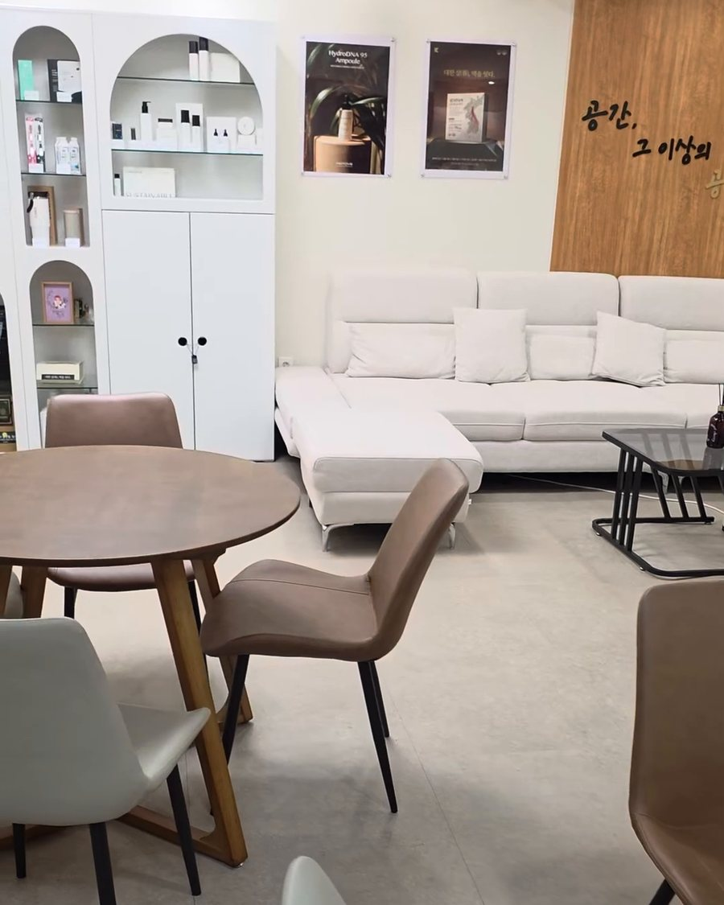
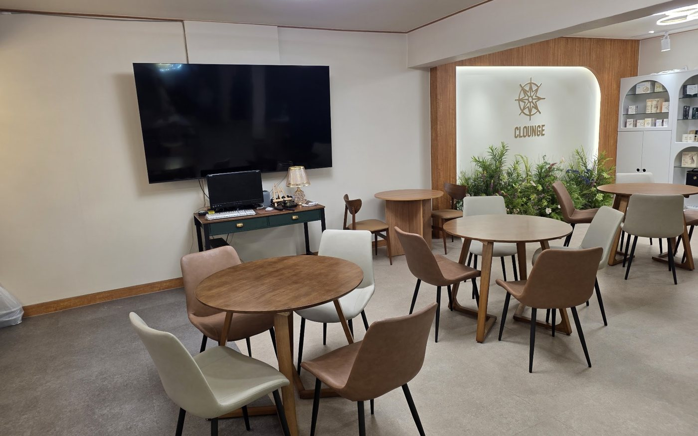
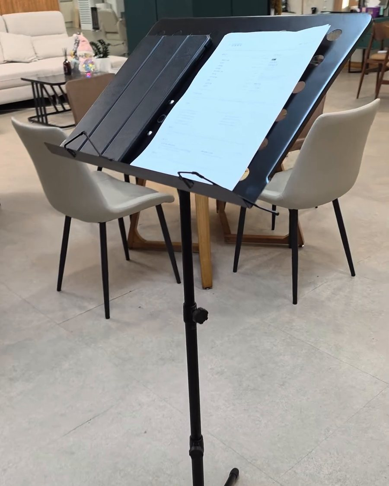
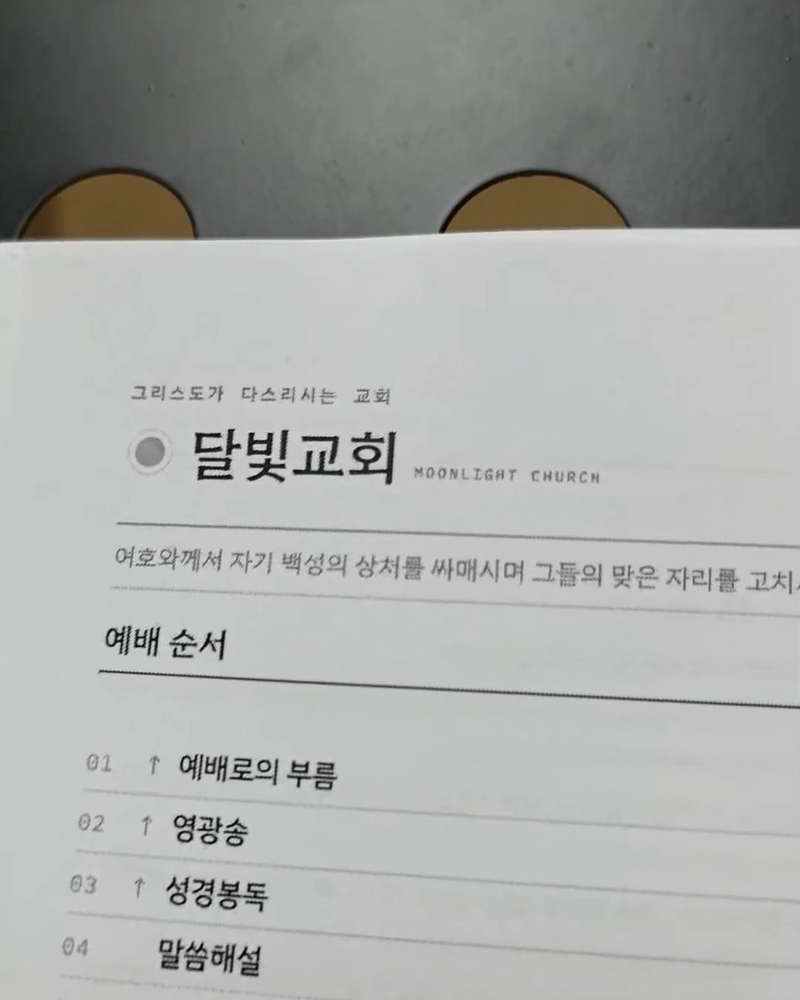
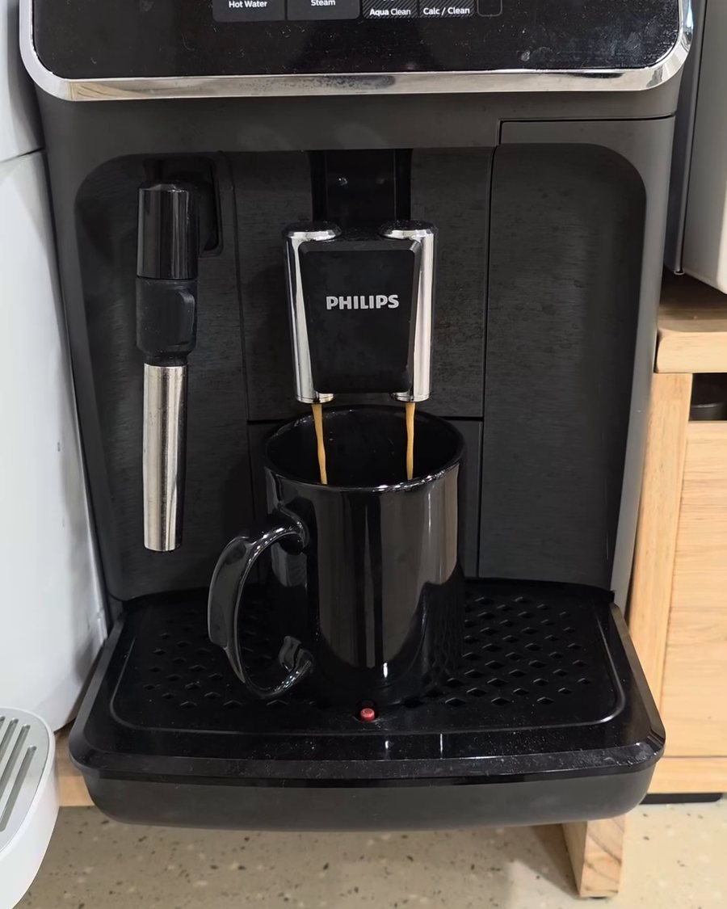

주일예배
매주 주일 오전 11시 30분
함께 모여 드리는 예배
함께 모여 드리는 예배
시간과 장소 안내 →
설교말씀
주일 강단에서 선포된
성경 말씀 강해
성경 말씀 강해
최근 설교 듣기 →
새가족 안내
처음 방문하시는 분을 위한
예배와 등록 안내
예배와 등록 안내
방문 안내 읽기 →
교회 소식
말씀과 교리를 공부한 후기
이번 주 주보와 소식
이번 주 주보와 소식
나눔 게시판 열기 →
주보 보기
이번 주 예배 순서와
본문 말씀 확인
본문 말씀 확인
이번 주 주보 →
☾ MOONLIGHT FRIENDS
달빛 친구들
함께 인사하고, 기도하고, 찬양해요


☾ 우리가 모이는 곳
달빛교회 풍경
주일마다 클라운지 서울 관악1호점을 빌려 예배합니다







